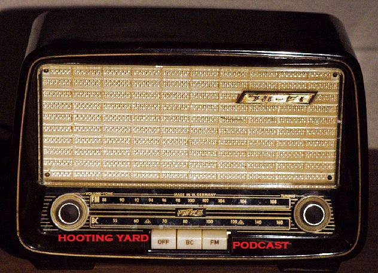

Monday, May the 9th, 2011
back to: title, date or indexes
Pin back your ears and listen to the latest Hooting Yard podcast, featuring John Ruskin, Robin Hod the bricklaying outlaw, Dr W B Crow, Grand Master of the Order of the Holy Wisdom, and some stuff about the light in Cornwall…
